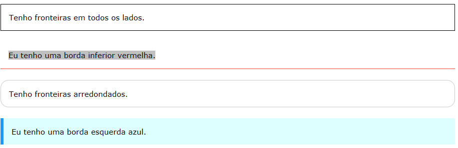

As CSS borderpropriedades permitem especificar o estilo, a largura e a cor da borda de um elemento.
A border-style propriedade especifica que tipo de fronteira para exibir.
Os seguintes valores são permitidos:
A border-stylepropriedade pode ter de um a quatro valores (para a borda superior, borda direita, borda inferior, e da fronteira
esquerda).
p.dotted {border-style: dotted;}
p.dashed {border-style: dashed;}
p.solid {border-style: solid;}
p.double {border-style: double;}
p.groove {border-style: groove;}
p.ridge {border-style: ridge;}
p.inset {border-style: inset;}
p.outset {border-style: outset;}
p.none {border-style: none;}
p.hidden {border-style: hidden;}
p.mix {border-style: dotted dashed solid double;}
Nota: Nenhum dos outros propriedades de fronteira CSS descritos abaixo terá qualquer efeito a menos que o border-styleimóvel está
definido!